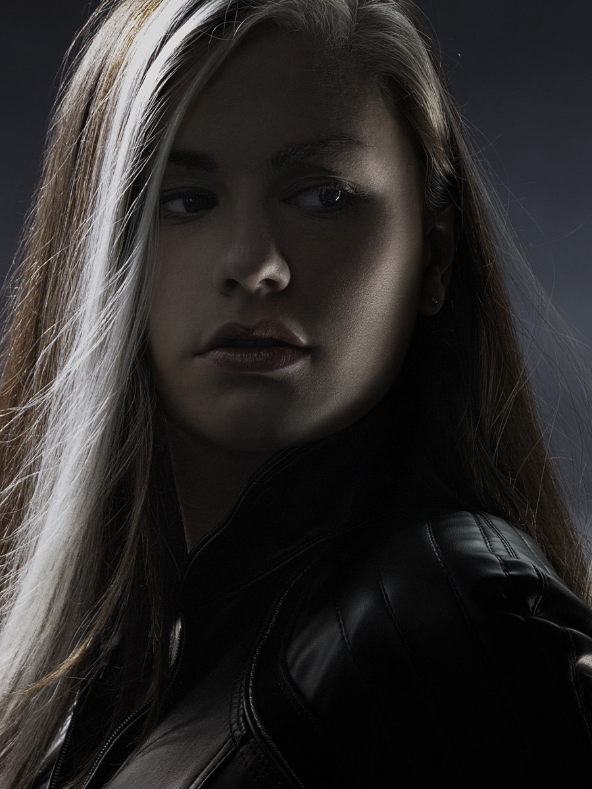

Rogue

- Real Name :Nimishamba
- Alias :Rogue
- Species :Mutant
- Gender :Female
- Rogue is a fictional superhero appearing in American comic books published by Marvel Comics, commonly in
association with the X-Men.
- Rogue, whose real name is Marie D'Ancanto, was an innocent young girl from Meridian..
- She debuted in Avengers Annual as a top 10 villain, but then soon after joined theX-Men.
- Rogue(anna marie) is part of a subspecies of humans called mutants, who are born with superhuman
abilities.
- Rogue has the involuntary ability to absorb and sometimes also remove the memories, physical
strength, and superpowers of anyone she touches. Therefore, Rogue considers her powers a curse
- The more Rogue uses her mutant power, the more her mind becomes filled with fragmentary psychic echoes of the people she absorbs.The permanently absorbed Carol Danvers (Ms. Marvel) is a completely distinct, albeit dormant,
personality in her head, and Mastermind subtly exacerbates Rogue's already severe psychological distress as
a means of revenge against Mystique.
" Once upon a time, Ah would have thrown you halfway to the moon for a crack like that. God help me if Ah start
to miss those days.." --Rogue...